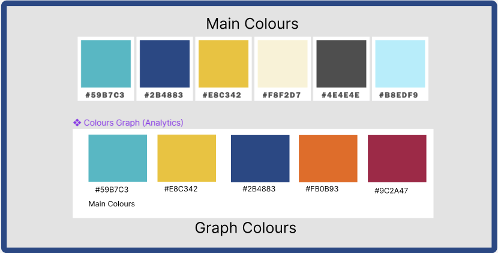

Timeline
Sept 2022 - April 2023
Role
Designer
PROJECT OVERVIEW
Introduction
The Flexible Location Tool prototype was developed by two individuals to support the development of the Flexible Work Location Tool platform as part of a capstone project at Okanagan College
Problem Faced
At the on-set of the pandemic and increasingly over the years there has been more of a demand for employees to work where its convenient for them, in their home. While Interior Health has accepted requests from employees to work from home they have done so in a more difficult way using pdfs sent via emails . The need to make an application that will assists with this process arose .
The Ultimate Objective
The purpose behind the Flexible location tool was to help the organization to comply by governmental and provencial regulations regarding working from home. It's other aims where to speed up the process of developing, sending and reviewing forms and to provide a central location for all documents while giving the users an easy user interface to work in.
Users
User Roles
The are 4 user roles in the application with the employee role being a universal role.
Employee
The Employee has access to an employee dashboard and is capable of filling out forms
Manager
A Manager on top of the employee role is able to review forms
Human Resources/ HR
An HR user has the capacity to review forms and view administrative data about those forms
Administrator
An admin user can create forms, and handles user permissions.
User Personas
Types of Users
- Primary Users: Employees, Managers, HR, and Administrators
- Secondary Users: Developers, UX Designers
- Tertiary Users: Provincial Government
From Analysis to Implementation
Site Maps per the user role
The images below highlight the sitemap for each role based on all the tasks they all individually perform.
Colour Scheme
For the Main Colors , we used colors that are internally consistent with the Interior Health websites and current systems. For the graph colors we made sure to keep the consistency as well but also kept only 5 colours to not make the graphs cluttered and hard to scan based on ux design guidelines. We also made sure any colours we picked were colour blind accessible.
Sketches & Mockups
Below are some rapid sketches I could find that we made when creating the roles and permissions pages. Initially though of doing a checkbox design. Where to toggle permission you would click on or unclick a permission but we slowly moved to a tabular format for permissions , that was a good option as our system already used tables for various things so that would make it more internally consistent within the application but also many current administrator pages with the same role have the same idea in the way they operate.


Here is the initial design we had for our high fidelity prototype but we ended up changing our design and part of the result was the admin page high fidelity shown below ↓
Below are some of the High Fidelity prototypes we produced. Can view the prototype in mor detail in figma down below ↓

Prototype
View Hi-Fi Figma Prototype Here.
Lessons Learned
What improvements can be made if the project where to continue?
- Improving use of signifiers that are internally and externally consistent
- If the project were to continue , we could do more testing to see what feedback we get and implement the feedback
What we learned as a team
Working with developers was very crucial to ensure the feasibility of our design in code but also overall userbility was there
Sticking to certain colours as main colours and others as accent colours to highlight something really important can make a difference
Getting Feedback from our client was essential in ensuring word signifiers we used we consistent with Apps within the organization
SEE MORE OF MY CASE STUDIES

Class Finder